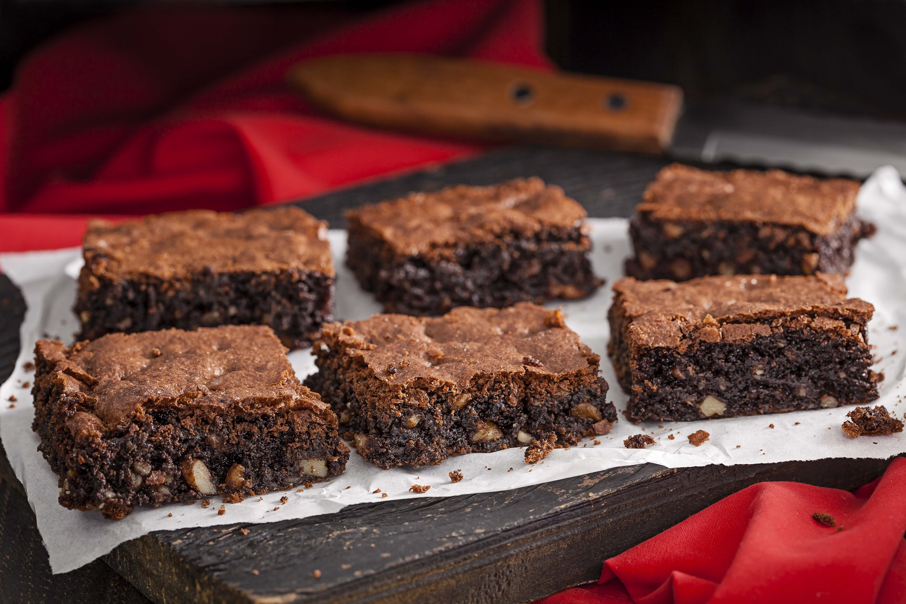

Brownie

Receita
- 1 xícara de óleo
- 1 xícara de acucar
- 1 xícara de água
- 2 xícarad de farinha de trigo
- 1 pitada de sal
- 1 colher de fermento
Passo a passo
- Misture os secos
- Acrescente os molhados aos poucos
- Acrescente o fermento e misture delicadamente